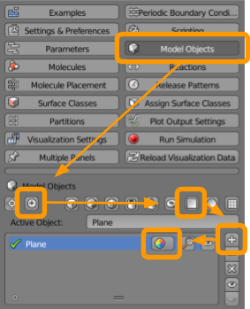
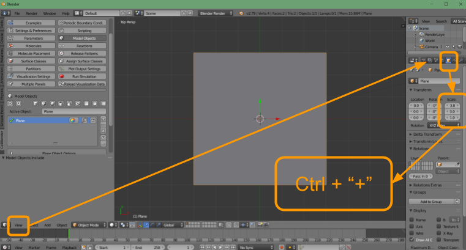

Software Tutorial: Simulating particle diffusion with CellBlender
Setting up CellBlender
Setting up CellBlender can be done using the default tutorial with just a few changes from the original installation instructions.
First, follow the instructions from the CellBlender website, with the following disclaimer.
Important: CellBlender requires a previous version of Blender. Use the following two changes to the default installation instructions.
First, instead of downloading the newest version of Blender, go to the previous versions tab…

…and download Blender 2.79b.
Second, once Blender is downloaded, the file path may be different from what is shown in the CellBlender tutorial- instead of Blender/2.79/python/bin, the pathway may be something like: blender-2.79/2.79/python/bin. Changing the name of the downloaded Blender folder to match the path in the tutorial may help reduce confusion.
Setting up CellBlender simulations
From a new Blender file, initialize CellBlender. Delete the existing default cube by right-clicking on the cube to select the cube (an orange outline should be around the cube when it is selected) and pressing the “x” key to delete. Then, in the tab CellBlender > Model Objects, insert a new plane, following the figure below.

In CellBlender > Model Objects, click on the + symbol to center the cursor. Next press the square “plane” button to create the object. To have CellBlender recognize this object as a model object, press the + button. The name of this object is Plane by default, although you can change this name and edit the color by selecting the color wheel if you like. A slightly transparent coloring will help with visibility but is not necessary.
Resizing the render preview window so that objects are visible in the center of the screen is recommended. See the following figure for instructions. Then save your file as CellBlender_Tutorial_Template.blend.

From the View menu, select Top to align the view directly overhead. With the plane object selected, follow the arrow over to the object parameters menu (the orange cube) and scale the plane by setting the first two values to “1.5”. Then, hover the mouse over the object and either use ctrl + “+” 6 times or the scroll wheel on your mouse to zoom in.
Navigating the CellBlender window
This section will provide images and descriptions for the different components of the Blender window. When a new file has been created, the following figure shows the menu options available.

A: This is the window for modules like CellBlender. To start CellBlender, you must click on the CellBlender tab and then click the Initialize CellBlender button as shown in the image. This will then display the image shown as “D” in the figure below.
B: There are many View tabs throughout the Blender window. Any future tutorials referring to the View tab are referencing this tab.
C: This window contains options relating to a selected object.

D: This is the CellBlender menu, which opens after CellBlender has been initialized, and contains sub-menus which will be noted as follows: CellBlender > Model Objects. We recommend dragging the edge of the window outward to increase visibility (see box “e” on the image above).
Implementing particle diffusion
In CellBlender, load the CellBlender_Tutorial_Template.blend file from the previous section and save your file as random_walk.blend. You may also download the completed tutorial file here.

Right click on the plane object to ensure it is selected. Visit the object parameters menu (the orange cube) and move the plane by setting the third location value to 1.0 instead of 0.0.
Then select CellBlender > Molecules and create the following molecules:

- Click on the
+button. - Select a color (such as orange).
- Name the molecule
X. - Select the molecule type as
Surface Molecule. - Add a diffusion constant of
1e-6. - Increase the scale factor to
5(click and type5or use the arrows).
Now visit CellBlender > Molecule Placement to set the following sites for molecules to be released:

- Click on the
+button. - Select or type in the molecule
X. - Type in the name of the Object/Region
Plane. - Set the Quantity to Release as
1.
Finally, we are ready to run our diffusion simulation. Visit CellBlender > Run Simulation and select the following options:

- Set the number of iterations to
1000. - Ensure the time step is set as
1e-6. - Click
Export & Run.
The simulation should run quickly, and we are ready to visualize the outcome of the simulation. To do so, visit CellBlender > Reload Visualization Data. You have the option of watching the animation within the Blender window by clicking the play button at the bottom of the screen, as indicated in the figure below. Then, save your file.

You can also save and export the movie of your animation using the following steps:

- Click on the movie tab.
- Scroll down to the file name.
- Select a suitable location for your file.
- Select your favorite file format (we suggest FFmpeg_video).
- Click on
Render > OpenGL Render Animation.
The movie will begin playing, and when the animation is complete, the movie file should be found in the folder location you selected.
Now that we have run and visualized our diffusion, we will head back to the main text, where we will continue on with our discussion of how the diffusion of particles can help us find Turing patterns.